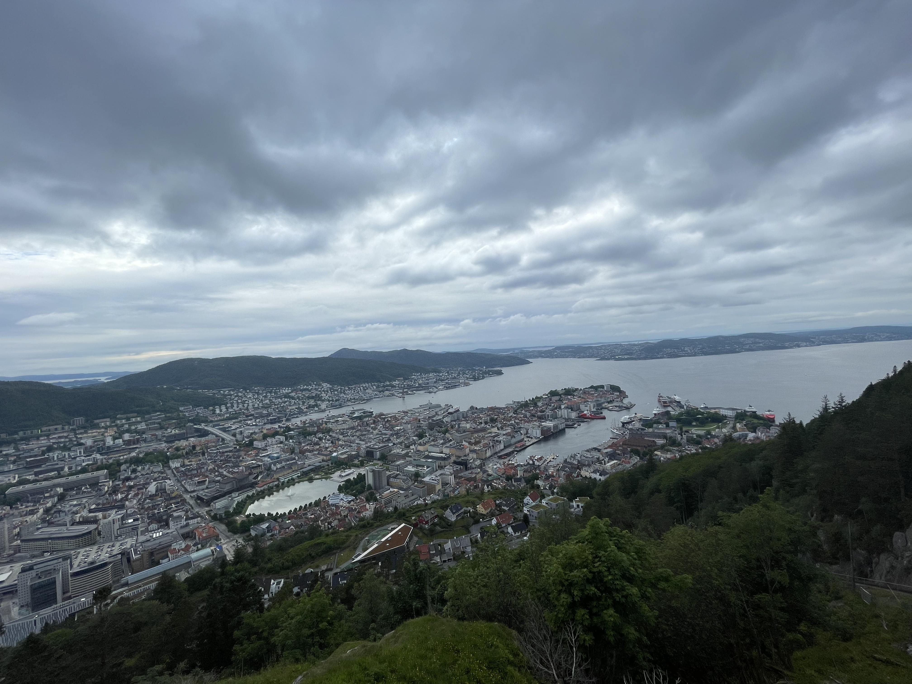
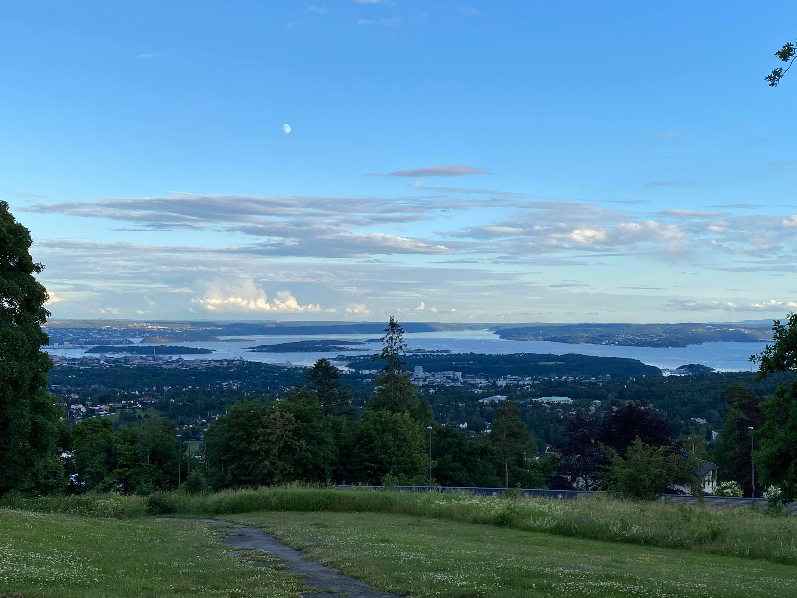
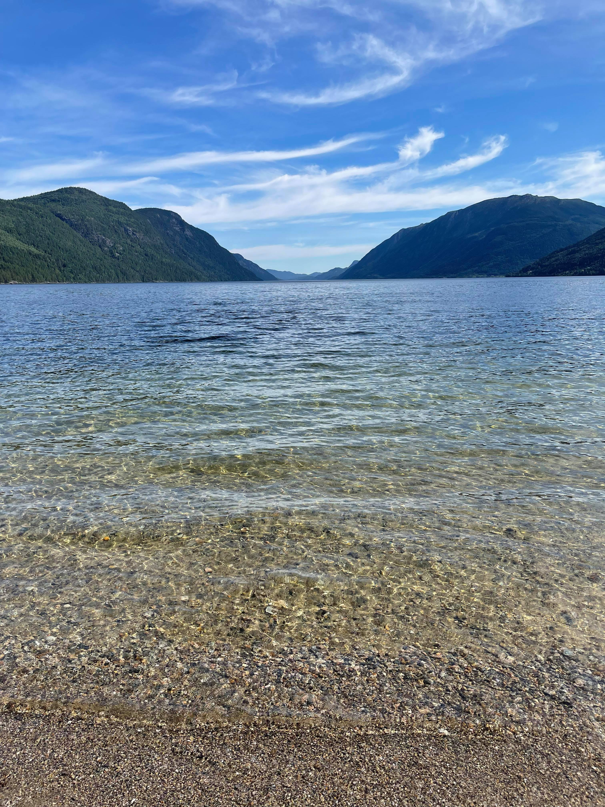
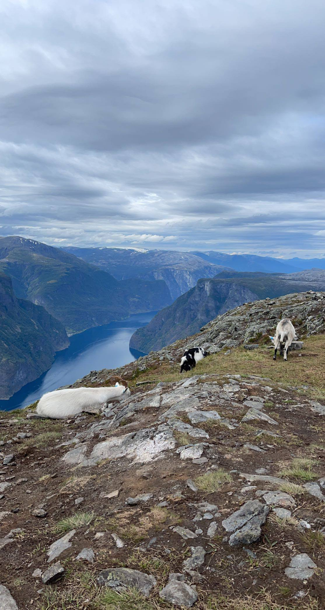
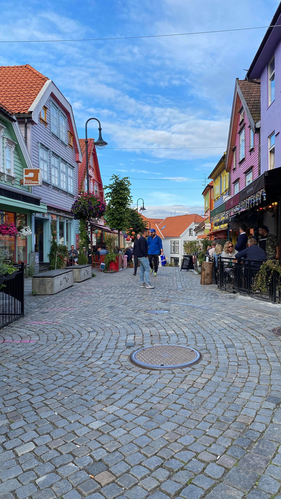

Topp 6 steder du må dra til!

Trollstigen
Hvis du ønsker å oppleve Norge på sitt beste, så må du ta turen til Trollstigen. Du kan enten bestige dette fjellet med fots eller ta deg em kjøretur til toppen. Dette er Norges mest besøkte turistvei som går mellom Åndalsnes og Valldal.

Fløibanen
Cabel-car turen opp til Fløibanen gir deg utsikten over hele Bergen. Cabel-car er en opplevelse i seg
selv. Du kan også gå opp til Fløibanen med fots hvis du ønsker å utfordre deg selv. Når du
kommer til toppen så kan du nyte delikatet maten fra folkeresturant. Hvis du ønsker deg noe smått så
kan du ta deg en pølse fra selveste pølseboden!

Holmenkollen
En t-bane tur unna oslo sentrum så havner du her. Ta med deg en venn og en flaske vin, og ha et piknikk med denne nydelige utsikten.

Tinn Austbygd
Hvem trenger å dra til Maldivenes når vi har Tinn Austbygg i Telemark. 2,5 timer kjøretur unna hovedstaden så kommer dere frem til denne destinasjonen. Det er idylisk å bade i krysstall klar vann. Ta med deg en venn og ta deg en kald bad da vel!

Aurlandsfjellet
Norge er kjent for sine fjeller og daler. Fjellet man absolutt må oppleve er Aurlandsfjellet. Aurlandsfjellet går mellom Aurlandsvangen og Lærdalsøyri og er 47 km lang. Det tar cirka 3 timer for å komme opp til toppen med fots. På toppen av fjellet så møter dere på denne nydelige utsikten. Og hva er bedre enn å møte på fjellgeiter langs fjellet og på toppen?

Den fargerike gaten
Fargegaten er en av de fineste gatene du finner i Stavanger, og er en av de gatene som er mest besøkt i Norge. Med så mange fine fargerike bygninger, så kan man ikke spørre om et bedre inspobilde til instagram.